PD 확정 C4 마크를 다듬어(칠한 붓 · 한 획으로 그은 무지개 · 진주빛 물림쇠 · 접힌 리본 · 종이 결 · 수채 번짐) 게임에 넣었다. 왼쪽이 전(지금까지의 게임), 오른쪽이 후. 모두 실제 게임을 같은 상태로 찍은 그림 (tools/title_apply_capture.gd: 2.5초 뒤 움직임을 멈추고 로고 높이 고정, 무지개는 다 그려진 순간).
앱 이름 글자(레인보우 아틀리에 · 하늘을 물들이는 소녀들)는 그대로. 벡터 원본은 svg/, 게임용 2배 PNG는 assets/brand/logo/ (SVG 필터는 미리 구움). 생성기: design/mockups/feedback70/title_apply/build.cjs.
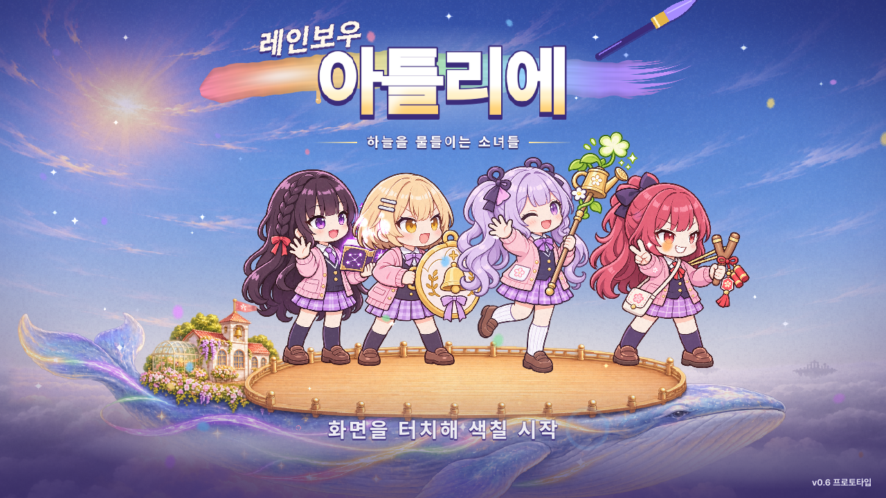
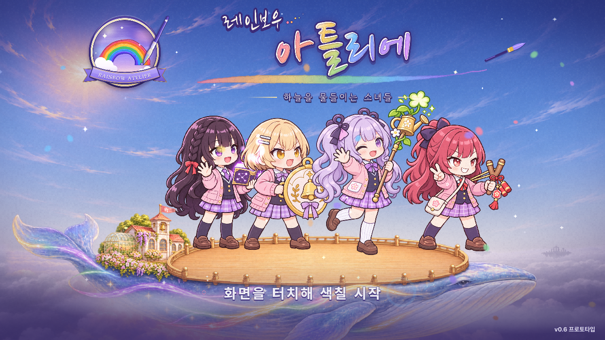
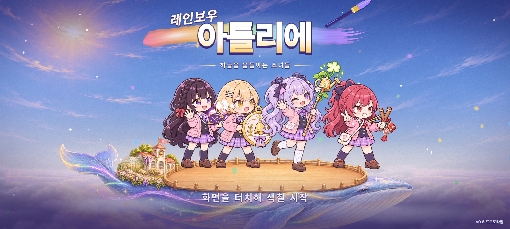
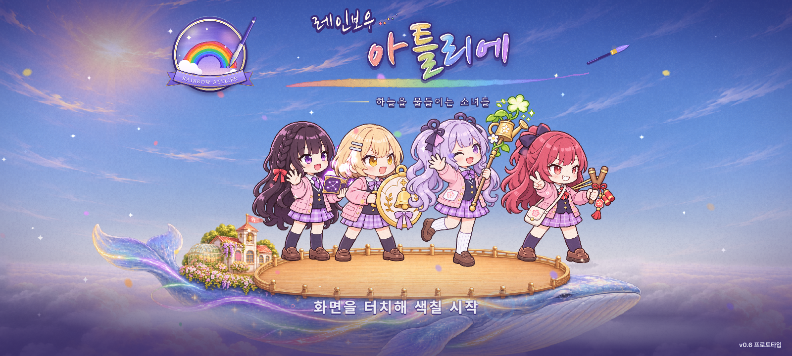
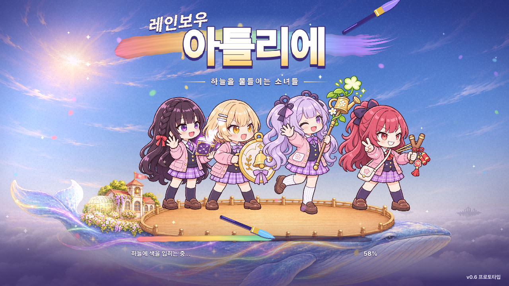
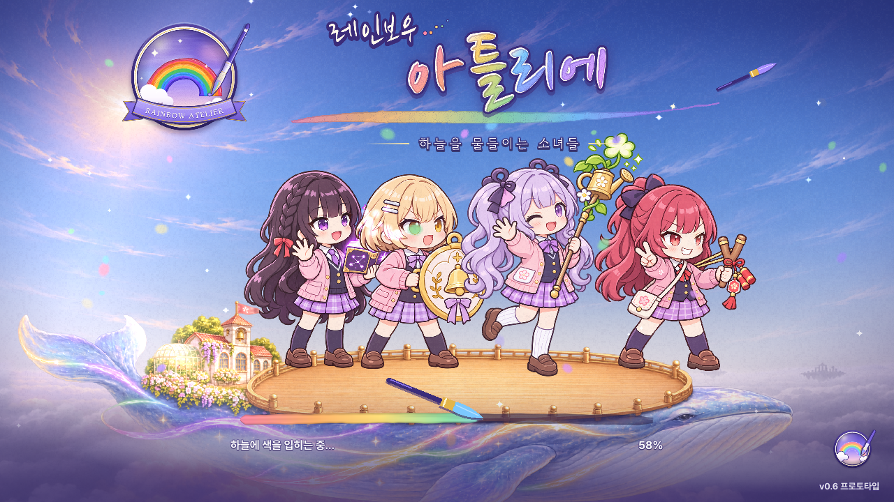
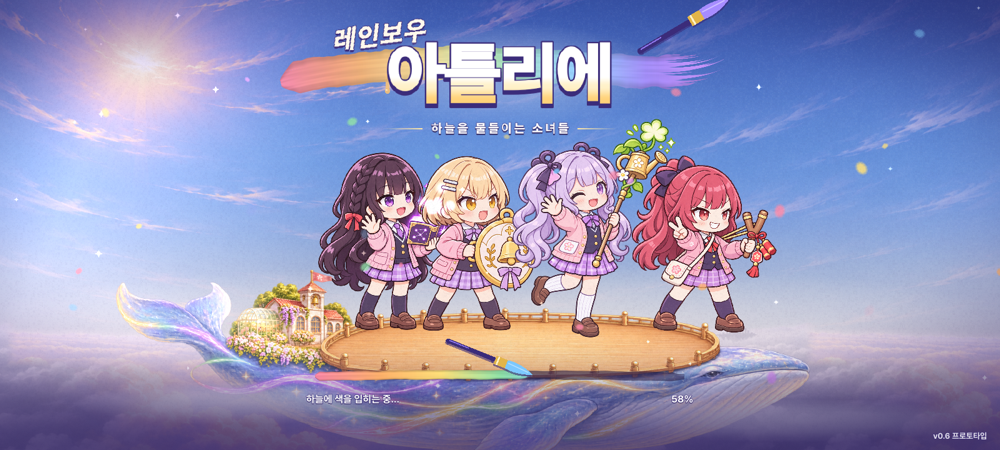
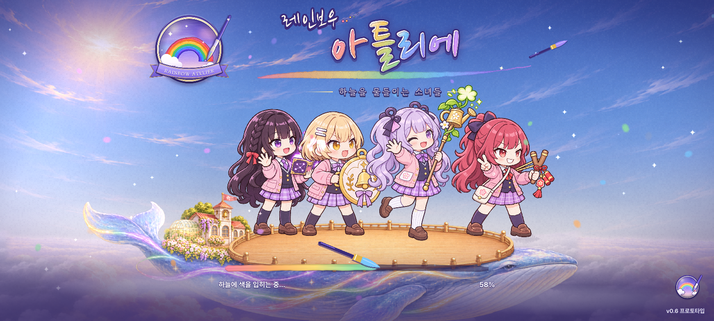
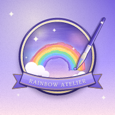
안드로이드 적응형 아이콘 (앞 432 투명 + 뒤 432 바탕, 런처가 원 · 둥근 사각으로 자름)
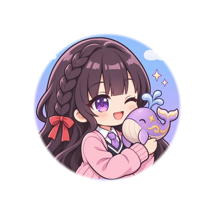
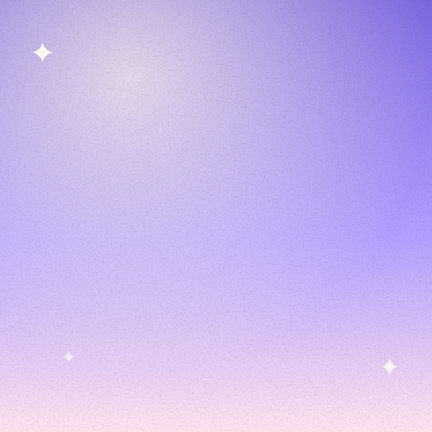
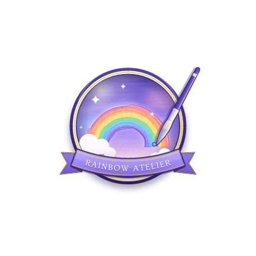
PC: assets/brand/logo/app_icon.ico (16 · 24 · 32 · 48은 작은 판, 64 · 128 · 256은 본판) → 프로젝트 config/windows_native_icon · Windows 내보내기 application/icon. 프로젝트 아이콘 config/icon = icon_512.png.
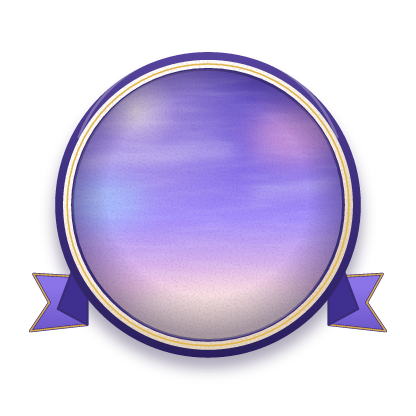
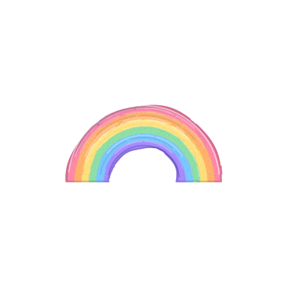
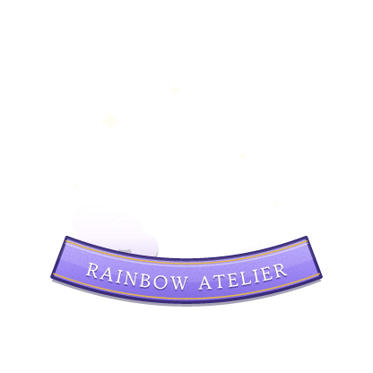
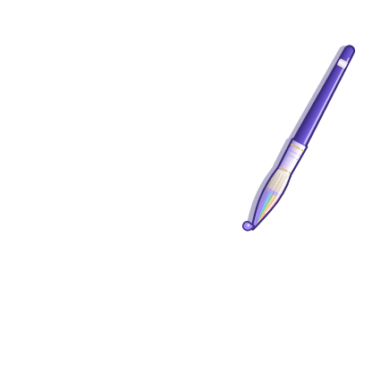
title_mark_rain.gdshader). 붓은 자루 끝을 축으로 ±2° 끄덕인다 (3초).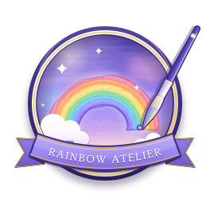
svg/mark_brush.svgsvg/mark_brush_small.svg (리본 글자 · 금선 · 결 없이 굵게)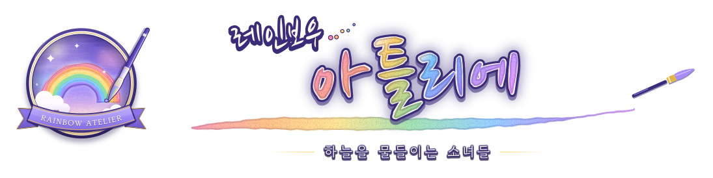
가로 짝 svg/lockup_b1.svg. 게임에서 B1은 6초마다 글자 면에 빛 한 줄이 지나가고(title_logo_sweep.gdshader), 붓 자국 밑줄을 따라 반짝이 넷이 차례로 켜진다. 로고 전체는 지금처럼 위아래로 3px 떠 있다.
| 게임 파일 | 쓰는 곳 |
|---|---|
assets/brand/logo/wordmark_b1.png (1692×522) · wordmark_b1_face.png (846×261, 빛 줄기 자리) | 타이틀 B1 글자 |
assets/brand/logo/mark_back · mark_rain · mark_front · mark_brush.png (각 416×416) | 타이틀 마크 겹 |
assets/brand/logo/mark_small_144.png | 로딩 구석 (72px 표시) |
assets/brand/logo/icon_192 · icon_512 · icon_1024.png | 안드로이드 기본 · 프로젝트 · 스토어용 |
assets/brand/logo/icon_fg_432 · icon_bg_432.png | 안드로이드 적응형 앞 · 뒤 |
assets/brand/logo/app_icon.ico | PC (Windows 실행 파일 · 창) |